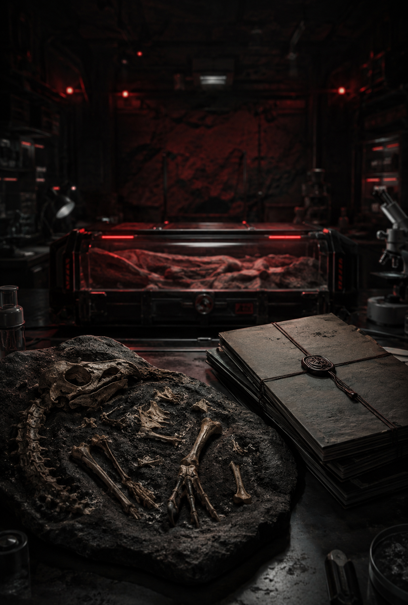
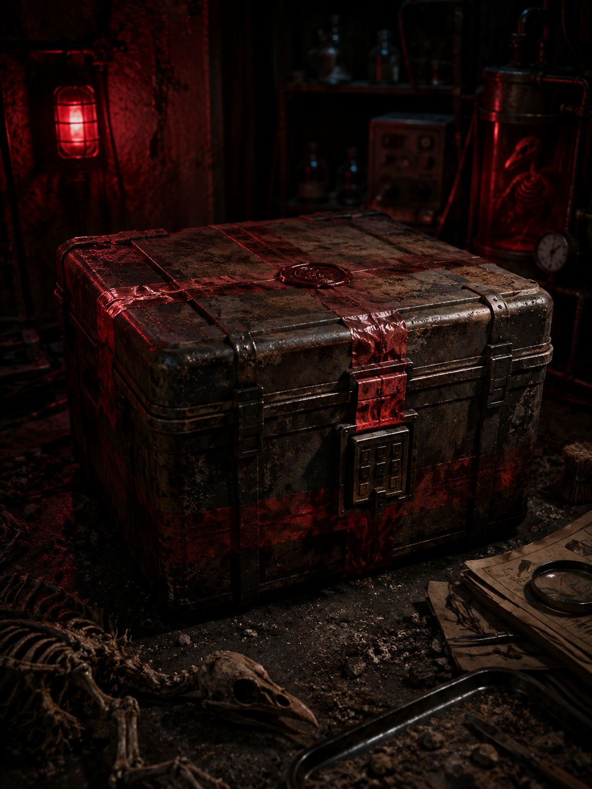

難度：未選擇
錯誤：0
--:--
污染值 0%
SYSTEM ONLINE / 網頁已成功開啟
《第五位研究員》
第七層標本復原程序
圖片位置：images/cover.jpg
封存檔案 / 地下研究站
封存檔案 / 地下研究站

ARCHIVE PHOTO / SEALED RECORD
封存警告
若發現九塊骨頭，請勿拼湊。若聽見箱中有人敲門，請勿回應。
若看見第五位研究員，請立刻停止操作。
請選擇難度。開始後系統將啟動音效、生命值與錯誤紀錄。
普通5 顆心 / 無倒數 / 適合展示。
封存3 顆心 / 4 分鐘 / 標準體驗。
第七層2 顆心 / 2 分鐘 / 錯一步就逼近登錄。
第五位1 顆心 / 90 秒 / 只給一次提示。
第七層標本復原板
SPECIMEN RECOVERY / 骨架定位
圖片位置：images/fossil-board.jpg
九塊骨頭復原板
九塊骨頭復原板

SPECIMEN BOARD / NINE PIECES
等待選取化石組件...
頭骨
頸椎
胸骨
左翼骨
右翼骨
骨盆
左腿骨
右腿骨
尾端碎骨
復原規則：下方骨頭每次都會被打亂。
點選骨頭圖片，再點選上方對應位置。拼錯會扣一顆心。
點選骨頭圖片，再點選上方對應位置。拼錯會扣一顆心。
檢測到異常刻痕
ANOMALOUS MARKINGS / 密碼線索
圖片位置：images/bone-markings.jpg
骨頭背面刻痕
骨頭背面刻痕

MARKINGS FOUND / DO NOT READ ALOUD
四塊骨頭背面有符號。你可以反覆翻面確認。
請依照身體由上到下的順序讀取。
請依照身體由上到下的順序讀取。
頭骨
Ⅰ
胸骨
Ⅸ
骨盆
Ⅲ
右腿骨
Ⅰ
監測到骨化刻紋痕跡...
百寶封存箱
CONTAINMENT BOX / 四位數驗證
圖片位置：images/sealed-box.jpg
百寶封存箱
百寶封存箱

CONTAINMENT BOX / LOCKED
缺一塊，
就還能活。
就還能活。
箱內傳出很輕的敲擊聲。
不是從箱子裡面。是從你握著手機的那一側。
不是從箱子裡面。是從你握著手機的那一側。
請輸入四位數密碼。
研究員登錄表
RESEARCHER LOG / 標本觀測者
圖片位置：images/final-mirror.jpg
黑色鏡面與登錄表
黑色鏡面與登錄表

OBSERVER IMAGE / CAPTURING
- 第一位：海哥✓
- 第二位：叔叔✓
- 第三位：惹男✓
- 第四位：南宇✓
- 第五位：＿＿＿＿●
第五位研究員仍在觀看。
請勿替他命名。
不要回頭。
封存失敗
THE SEVENTH LAYER HAS RECORDED YOU
錯誤過多。
第七層已取得觀測者位置。
第七層已取得觀測者位置。

RECOVERY FAILED / POSITION FIXED
心跳訊號中斷
骨架沒有復原完成，但第九個位置已經被記錄。你可以重新開始，但第七層不會忘記你第一次錯在哪裡。